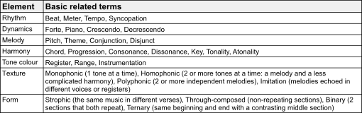
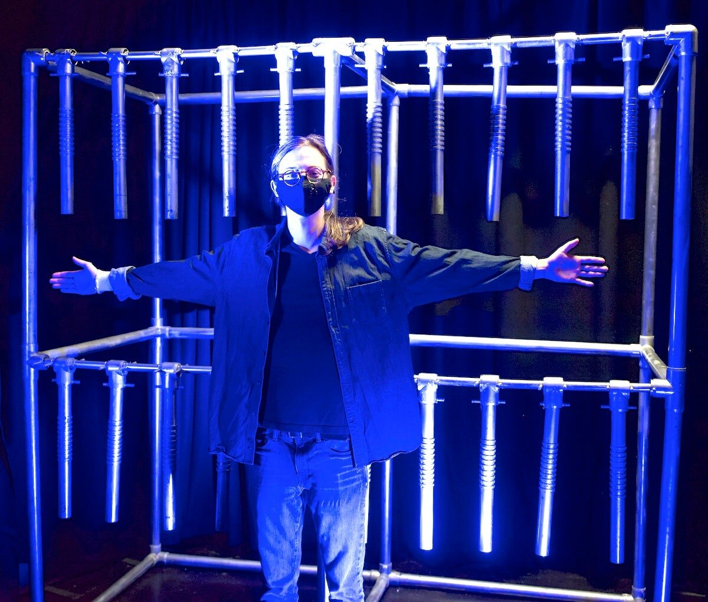
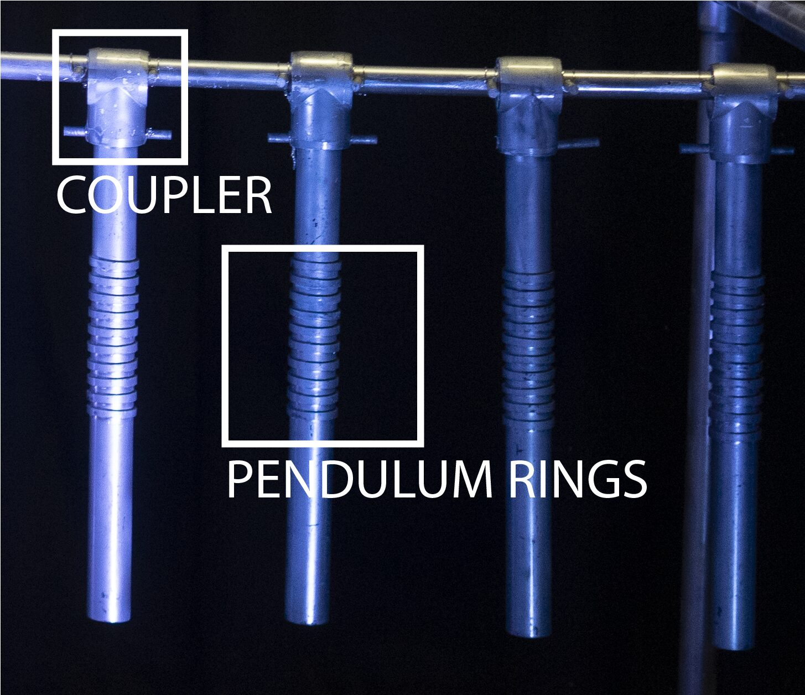
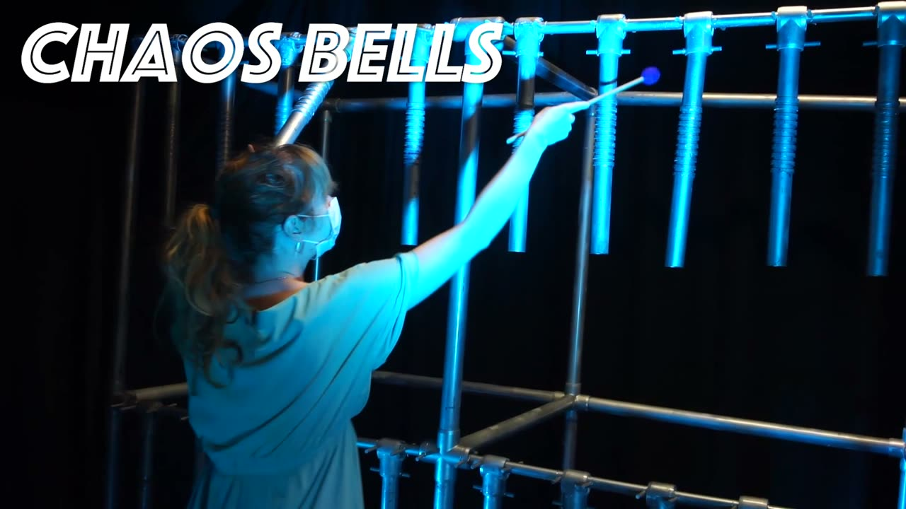
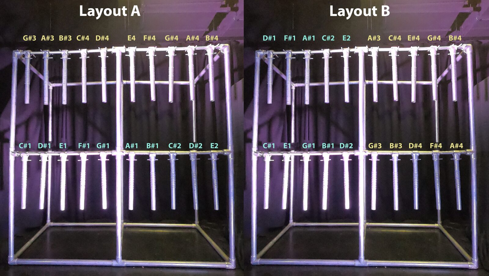
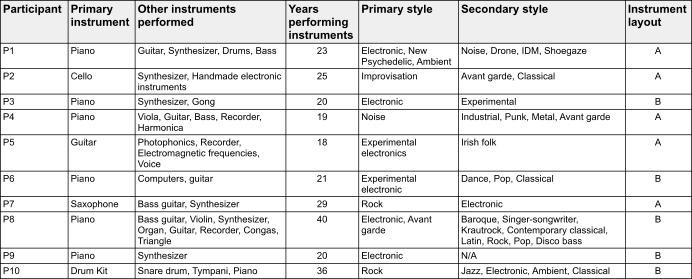
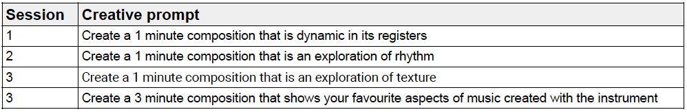
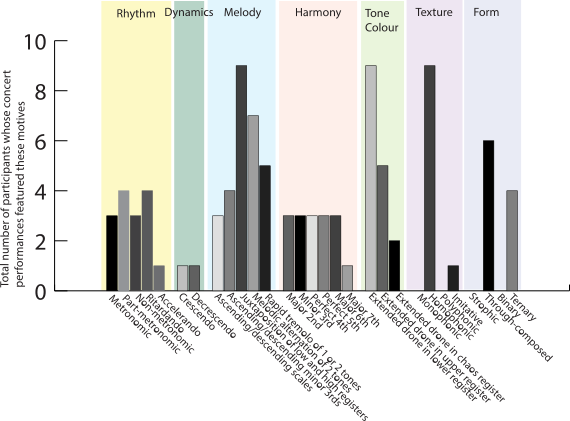

The M in NIME: Motivic analysis and the case for a musicology of NIME performances
Abstract
While the value of new digital musical instruments lies to a large extent in their music-making capacity, analyses of new instruments in the research literature often focus on analyses of gesture or performer experience rather than the content of the music made with the instrument. In this paper we present a motivic analysis of music made with new instruments. In the context of music, a motive is a small, analysable musical fragment or phrase that is important in or characteristic of a composition. We outline our method for identifying and analysing motives in music made with new instruments, and display its use in a case study in which 10 musicians created performances with a new large-scale digital musical instrument that we designed. This research illustrates the value of a musicological approach to NIME research, suggesting the need for a broader conversation about a musicology of NIME performances, as distinct from its instruments.
Author Keywords
Motivic analysis, digital musical instrument design, musical interaction, large DMI, musicology of NIME performance, music theory, DMI evaluation
CCS Concepts
•Applied computing → Sound and music computing; Performing arts; •Information systems → Music retrieval;
Introduction
“Where words fail, music speaks”. - Hans Christian Andersen
Every year at NIME new instruments are performed. Practice-based research, in which performances and compositions form a core part of the intellectual contribution, is well-established at NIME [1] [2] [3] [4] [5]. However, musicological analyses of music made with new instruments feature far less in the NIME literature, with evaluations more often focusing on the experience of performers, audiences or other stakeholders [6]. While musicological analyses may be inappropriate for some NIME research, such as short-term investigations with non-functional instruments or technology probes not intended for music making [7] [8], we argue that in the context of new instruments that are intended for performance, much can be learned from adding musicological performance analysis to the evaluation methodologies commonly used at NIME [9] including thematic analysis [10] and cataloguing gestural interaction when a participant encounters a new instrument [11] [12] [13], all of which involve capturing data via a range of methods including recording, field notes, interaction logs, interviews and questionnaires.
Musicology is a broad term [14], encompassing amongst other things music theory and analysis, music history and ethnomusicology; the field grapples with tensions between text and practice, between musical and social factors, and with persistent debates over what music should be privileged for study. Aside from scores and performances, instruments are also an important area of musicological study [15] [16] [17]. With limited space in this paper, we cannot do justice to the breadth of the field. Rather, we propose that analysis of NIME performances provides a different set of intellectual perspectives and insights compared to HCI-derived or practice-driven methods more commonly used to evaluate NIME instruments. In this paper we begin from a specific and limited subset of music analysis, motivic analysis, focusing on patterns of musical sound as distinct from the physical movements that performed them. While motivic analysis is commonly found in traditional score-based music analysis, the non-score-based context of our study perhaps has more affinity with the field of performance studies [18].
The techniques in this paper are intended to complement, rather than replace, other established forms of NIME evaluation, and might serve as a modest starting point for deeper conversations about the analysis of music performed with new digital musical instruments (DMIs).
Background
Idiomatic music and new instruments
Far from being a blank slate, all instruments are embedded with scripts [19] that encourage certain types of music-making and discourage others. As a result of the instrument’s physical affordances, composing with an instrument can result in idiomatic music [20] [21] [22], music optimised for an instrument and made up of “ready-made sequences” and “characteristic patterns that cannot be predicted by grammatical rules alone” [20].
What is idiomatic to perform with new instruments has not yet been defined [21]. Musical patterns can be shaped by idiomatic gestures [13] [23] or by patterns of thought promoted by music programming languages [24].
In the context of DMIs, because the designers’ ideas of music are embedded in the instrument, instrument building has been compared to composing [25], and performing with someone else’s instrument has been likened to performing their composition [26]. The same principle holds to a certain extent with any instrument, even traditional acoustic ones: to perform an instrument is to engage in an artistic conversation across time and distance with its creator/s.
However, the specific way idiomatic patterns manifest in composed or performed repertoire has received less attention. Examining musical motives that performers employ when playing an instrument can offer clues about what kind of music is idiomatic to an instrument and why.
The musical motive
In the context of music, a motive (or motif) is a small, analysable musical fragment or phrase important to or characteristic of a composition [27]. As “the smallest structural unit possessing thematic identity” [28], a motive can be any element of music. Table 1 shows examples of elements of western music, any of which could form part of a motive.
Table 1: Some western music elements


Our method of motivic analysis
We developed a method of motivic analysis for examining music and performances created with new instruments.
New instruments commonly have no notation system, or one that captures a limited subset of the instrument’s salient musical features. Rather than examining notated scores, which has long been common practice for musical analyses of established repertoire, our method of motivic analysis examines the audio of the performance. Therefore, our method is also applicable to studying improvisation.
Given that a motive is an element of music that is characteristic of a composition, selecting the motives for motivic analysis is not a catalogue of all elements of music present in the performance. Rather it is a catalogue of the elements that are characteristic to the performance. We identify the motives in a 2-step process. We first catalogue all elements of music present in the performance. From this catalogue, we select only elements that are characteristic of the performance to become the motives for use in our motivic analysis. The question “would the performance be recognisable as the same performance without the inclusion of this element?” helps us identify which elements are motives of the performance.
Identifying motives is not an either-or process. Many conflicting motives may be simultaneously present and equally characteristic of the performance. The juxtaposition of conflicting motives may be a motive in itself. Following the process of motive identification for all performances results in a codebook of motives that is comparable like any other data set.
Case study overview
The remainder of this paper presents a case study that demonstrates how our method of motivic analysis can be used to examine music made with new instruments.
We hypothesised that the physical design of a large instrument would influence what is idiomatic to perform with the instrument. We hypothesised that we may see physical performance patterns that trend across performers (regardless of the resulting tones) which may influence the tone selection of composers performing with the instrument.
To test these hypotheses, we updated the design of the large DMI from a previous study [29]. To create a data set for comparing performances to determine the influence of physical design on the performances created, we gave half the participants one tonal layout and half the other tonal layout of our DMI.
The study instrument
The very large (2 metres wide and tall) instrument is shown in Figure 1.


Figure 1: P1 in front of the study instrument. Photo used with permission from the participant.
Hardware and software
Constructed of PVC pipes, the DMI features 20 performable pendulums that can swing up to 90 degrees forwards or backwards. Each has a textural pattern of raised rings (shown in Figure 2) inspired by the Latin-American güiro and an embedded analog accelerometer sampled at 22.05kHz, with several kilohertz of usable analog bandwidth. Collectively the accelerometers connect to 4 Bela mini [30] embedded computers running Pure Data [31].


Figure 2: The study instrument has 20 performable pendulums attached to the instrument frame with a coupler. Each pendulum features 10 raised rings.
Sound design
The DMI is tuned to the western scale of C# melodic minor with 10 lower register tones (C#1 to E2) and 10 higher register tones (G#3 to B#4). The sound design, adapted from Chair Audio’s Tickle Instrument [32], features Karplus-Strong string synthesis [33].
The lower register tones feature a clear fundamental frequency and sound like a synthesised electric guitar, meanwhile the higher register tones contain more inharmonic partials for a bell-like quality.
Striking the instrument with a mallet or hand results in a staccato (short) tone. Striking the pendulum or coupler (Figure 2) results in a clear tone whereas striking the support beam or instrument frame results in a cacophonic combination of the instruments’ tones. A drone (sustained tone) is performed by tilting a pendulum. The timbral quality and decay of the drone changes according to the pendulum angle: the accelerometer angle changes the feedback coefficient of the Karplus-Strong algorithm. At an angle somewhere between 45 and 90 degrees, the feedback coefficient becomes greater than 1, producing an unstable system where the drone grows over time, becoming chaotic and distorted as it is clipped by the digital system, finally disintegrating into broadband noise.
The instrument is polyphonic up to 20 voices. The staccato strikes and drones can be performed simultaneously, including on the same tone. Figure 3 demonstrates basic techniques and sounds and shows an example performance with the instrument.

▶Figure 3: Video showing the basic techniques for performing the study instrument and an example performance, viewable at https://youtu.be/o9o-ku7qPpw
Tonal layouts
The study instrument was created in two different tonal layouts: A and B (shown in Figure 4). For the duration of the study, half the participants received tonal layout A and half received tonal layout B. This way, the performances created with layout A could be compared to those created with layout B, because performing the same physical performance gestures on each version of the instrument would result in different tones. On layout A, the lower register tones ascend left to right on the lower tier, and higher register tones ascend left to right on the upper tier. On layout B, lower register tones ascend in a zig-zag pattern on the instrument’s left side, and higher register tones ascend in a zig-zag pattern on the instrument’s right side.


Figure 4: Location of tones on instrument layouts A and B with lower register tones shown in blue and higher register tones shown in yellow.
Study Design
Participants
An open call on social media invited musicians to create performances with a new instrument for an online concert as part of a study. All 10 respondents that were available took part in the study: 4 women, 3 men and 3 gender-fluid people, whose ages ranged from 28 to 49. While all participants have a formal western music background (shown in Table 2), and are established composer-performers within the experimental electronic music scene of London, their primary instruments and styles vary.
Table 2: Participants


Method
As we were interested in comparing performances created by musicians familiar with the instrument, we designed the study to take place over 3 sessions. During each session, the musicians privately engaged with the study instrument for 1 hour. They were asked to create compositions in response to creative prompts (shown in Table 3), and perform each composition twice to ensure that they were indeed composing rather than improvising. Performances and interviews were video and audio recorded. The musicians were told that the final 3 minute performance would be broadcast on an online streaming concert.
Table 3: Creative prompts


Data collection and analysis
The analysis was primarily conducted by the first author, in consultation with the second author. The audio of the recorded interviews was automatically transcribed using the online service otter.ai with manual corrections. The interview data was analysed following a thematic analysis methodology [10] that took both an inductive (from the data) and a priori approach [34].
The performance videos were additionally analysed following our aforementioned motivic analysis method.
Outcomes
The thematic analysis codebook (shown in Appendix 1) features 964 coded segments.
Figure 6 shows the outcome of the motivic analysis of the 3 minute concert performances.


Figure 6: Outcome of the motivic analysis
We argue that the motives that make up idiomatic writing for this instrument are those that appear in over half the performances: the juxtaposition of high and low registers (9 performances); melodies created by alternating between 2 tones (7 performances) and extended drone/s in the lower register (9 performances).
Here we combine the thematic and motivic analysis of the 3 minute concert performances to explore the factors that resulted in the instrument’s idiomatic writing.
Melody
The juxtaposing of low and high registers is a motive of 9 concert performances.
Participants may juxtapose lower and higher registers as influenced by their musical backgrounds. P1, whose primary styles are electronic, new psychedelic and ambient, said “If I had a keyboard or guitar pedals or something like that, I would normally have a low note playing off against a high melody and drones. Stuff like that”.
The melodic alternation of 2 tones is a motive of 7 concert performances. This is interesting because the thematic and interaction analysis offers no data on this happening, nor that participants consciously composed performances that feature alternation of 2 tones. Therefore without the motivic analysis we would not have been aware this was a trend in the performances.
Harmony
The motivic analysis of intervals of two pendulums played simultaneously either as strikes or drones reveals that across all performances no specific intervals trended more than others.
Tone colour
Extended droning in the lower register was a motive of 9 concert performances.
All 10 participants included drones in their concert performance. The drone was P1 and P3’s favourite aspect of the instrument. P1 commented “If I had to do one thing, it would be that.”
A section of P9’s concert performance is made up solely of drones. She commented “I think I've made synthscapes that have that same kind of expansive, rolling, slow feel”. P8 commented that they enjoy “spacing out to drones” in general, not just when performing with the study instrument. 3 participants (P1, P2, P5, P9) were specifically drawn to the edge-like interactions [35] in the drone, exploring the edge of the sustained tone disintegrating into ‘chaos’ (broadband noise), while 6 participants (P1, P2, P4, P5, P9, P10) spoke of finding the ‘sweet spot’ in the drone, the point of sustaining the drone to their desired timbral quality.
But why are extended low drones a motive that forms idiomatic music for this instrument, and not extended high drones? P1, who performed layout A in which the higher register is on the upper tier, commented that performing the higher register drones requires more effort than the lower register drones. However the additional effort to perform upper tier tones does not explain the trend of participants preferring extended low drones over extended high drones because on layout B, upper register tones are equally dispersed across both tiers.
The thematic analysis suggests that the participants simply like the sound of the lower register tones, and the drone allows for exploration of various timbres within each tone. P1 said he enjoys “the ambiguity of these [low drone] sounds, because it's got so many tones mixed in. The amount of variation just in that small space is really interesting”. P9 commented “I like the really big resonant bass sounds”. P7 commented that the lower register tones “fits better” with the “physicality” of the instrument.
The relationship between instrument layout and melodic motives
When comparing the motivic analysis to the instrument tonal layout assigned to each participant, we noticed that all 3 participants whose concert performances feature the melodic motive of at least 3 ascending or descending tones in order of the scale were assigned layout A, in which the tones ascend left-to-right along each tier. Similarly, of the 4 compositions that feature melodies made up of at least 3 minor thirds in order, 3 were performed by participants that were assigned layout B, in which tones on each tier ascend left to right in minor thirds.
Discussion
The value of motivic analysis in our findings
Comparing the motivic analysis to the instrument tonal layout revealed that the physical layout of tones influenced the melodies featured in performances. Performers are more likely to compose melodies constructed from tones located on the lower tier and pendulums located adjacent to one another.
With the addition of motivic analysis, the discoveries made through thematic analysis gained more dimensions and clues to their origins. For instance, while the thematic analysis revealed the musicians enjoy performing drones, the motivic analysis revealed what kinds of drones the participants performed.
When we returned to the thematic analysis after doing the motivic analysis we noticed that no interview data discussed the melodic alternation of 2 tones, that we identified in 7 performances. Therefore motivic analysis has the potential to identify aspects of performances that performers themselves may not be aware are in or characteristic of their performances.
The case for a musicology of NIME performances
Numerous musicological perspectives have been written on instruments and music technologies past and current (e.g. [17] [36] [37] [38]). In a reversal of the situation with pre-20th-century Western art music, ethnomusicological perspectives are arguably more established in the NIME community than traditional music-theoretical analyses of NIME performances. Additionally, music-theoretical analysis has been applied to electronic music genres both popular and experimental (e.g. [39][40][41][42]).
In this paper we argue for elevating the music performed on NIMEs as a subject of research rather than as a separate siloed element of annual conferences. Creating a musicology of NIME performance would draw together those already bringing such analytical perspectives to NIME [43][13][22][44] while encouraging a closed loop between performances and written publications. This stream of work would sit alongside, but distinct from, gestural and experiential analyses deriving from HCI traditions. No single analytical approach can be appropriate to all NIME music, nor can any single analyst claim a definitive interpretation of artistic works in the community, so a musicology of NIME ought to emerge from an inclusive conversation amongst researchers, scholars and artists.
Limitations of our method of motivic analysis
Our motivic analysis methodology has some limitations. First, it is based in western music. In this study, all authors’ and participants’ musical backgrounds are in western music, so it made sense to construct this motivic analysis around the elements of western music. However, we acknowledge that both participant selection and analysis method could be seen to continue a post-colonial tradition of elevating a western musical canon. We hope this methodology inspires future work that uses motivic analysis of new instrumental performances within a variety of cultures and genres.
Second, a musical motive is an element deemed characteristic to the composition. It follows that the integrity of a motivic analysis relies on the subjective judgement of what is important to the composition. In our methodology, motive selection and motivic analysis were both executed by us without consulting the participants. Although it is common for music analyses to be conducted by someone other than the composer or performer, the process is subject to influence from our musical judgments and biases [45].
Third, a motivic analysis focuses on music made regardless of physical gestures and techniques performed with the instrument and could therefore be conducted using as source material any method of recording including video, audio or music notation. The varying nature of notation and scores for new instruments could make comparing data difficult. Meanwhile, coding motivic analysis from audio or video recordings has its own limitations, for instance audio compression may influence perception of dynamics.
Conclusions
This paper suggests the value of traditional musicological analyses of the music made with new instruments, taking as a case study the motivic analysis of performances on a large-scale digital musical instrument. Using motivic analysis in conjunction with thematic analysis, we discovered insights into the relationship between the instrument’s physical design and musical performances. We found that on our instrument, the physical layout of tones influences the melodies that are characteristic of each performance.
Motivic analysis has the potential to identify aspects of the music that performer-composers may not have been aware of themselves. This research illustrates the value of a musicological approach to NIME research, suggesting the need for a broader conversation about a musicology of NIME performances, as distinct from its instruments.
Acknowledgments
This research is supported by EPSRC under the grant EP/L01632X/1 (Centre for Doctoral Training in Media and Arts Technology) and by the Royal Academy of Engineering under the Research Chairs and Senior Research Fellowships scheme.
Ethics Statement
The study was reviewed and approved by the ethics board of Queen Mary University of London (ethics approval reference #2393) prior to research commencing. While the instrument is large in size, it is lightweight and therefore does not put participants at risk of injury, hence the ethics facilitator deemed the study extremely low risk.
During the first study session, the investigator introduced the participant to the study instrument and explained that the instrument is safe to perform as long as the participant does not attempt to climb the instrument. Having seen the instrument, the participant confirmed that they would participate in the study and completed a consent form as required by the institution ethics board. All participants were subsequently shown various performance methods for performing the instrument, and told that all techniques are optional, as is all participation in any aspect of the study.
The travel costs for all participants to attend all sessions were paid for from the first author’s research budget, funded by EPSRC under the grant EP/L01632X/1 (Centre for Doctoral Training in Media and Arts Technology)
Appendix 1: Thematic analysis codebook
Elements of western music (12 codes)
Texture
Form
Rhythm
Dynamics
Melody
Gestures and techniques (56 codes)
Performing drones with leg
Muscle memory
Techniques that require more practice
Instrument size and gesture
Gestures that feel good
Ancillary gestures
Effort (15 codes)
Choosing pendulums that can be reached in time
Performing with mallets to add arm span
Gestures that require effort
Developing a new gesture because it requires less effort
Entanglement (14 codes)
I work with the unpredictability of the instrument
The instrument makes me feel powerful
Characteristics of the compositions (139 codes)
Aimed for clean tones
Intended to create tonal music
Didn’t have a plan for the performance at the start of the session
Primary instrument influenced the performance
The physical layout influenced the performance
Mistakes
Genre
Reflections on the instrument (282 codes)
Enjoyed playing drones
Mallets should be longer
Comments on how sensitive the instrument is
The bass suits the physicality of the instrument
This instrument is not similar to any instruments I play
Enjoys hearing multiple drones at once
I like that the instrument can create textural tones
What makes the instrument fun
Wanting haptic vibration feedback
Comparing the instrument to a string instrument
Size and perception of the instrument
Timbral variation across registers
Easiness and difficulty
Unpredictability
‘Performing perception’ (awareness of the audience) [46] (7 codes)
Examples of performing perception
Imagined instruments consider the spectator/audience
Considering the spectator when performing
Conceptions of the body (33 codes)
Avoiding certain techniques because less comfortable
It feels nice to play a large instrument
The instrument feels like gym equipment
Tilting the upper tier pendulum/s is tiring
Getting into flow state was weird because I’m standing
Remembering the performance through body movement
Movement (29 codes)
I like the way my body moves playing the instrument
The instrument is physical to play
The way the instrument controls movement of the body
Static performance
It feels good to move around the instrument
Learning the instrument over time (356 codes)
Remembering the performance by the starting tone
Session 1
New gestures
Something considered but didn’t try this session
I didn’t add new gestures this session
What gestures I liked this session
Something I didn’t want to do with the instrument
Session 2 gestures
New gestures
Something I considered but didn’t try this session
I didn’t add new gestures this session
What gestures I liked this session
Something I didn’t want to do with the instrument
The composition was more advanced this session
Aiming for more tactile gestures
Session 3 gestures
New gestures
Something I considered but didn’t try this session
I didn’t add new gestures this session
What gestures I liked this session
Something I didn’t want to do with the instrument
‘Edge-like interactions’ (exploratory performance interactions at the boundary between stability and instability) [35] (21 codes)
I’m drawn to the edge-like interactions
Finding the ‘sweet-spot’ in the drone
Citations
- ↩Stapleton, P., & Davis, T. (2021). Ambiguous Devices: Improvisation, agency, touch and feedthrough in distributed music performance. Organised Sound, 26(1), 52–64.
- ↩Green, O. (2014). NIME, Musicality and Practice-led Methods. Proceedings of the International Conference on New Interfaces for Musical Expression, 1–6. https://doi.org/10.5281/zenodo.1178776
- ↩Carey, B., & Johnston, A. (2016). Reflection On Action in NIME Research: Two Complementary Perspectives. Proceedings of the International Conference on New Interfaces for Musical Expression, 377–382. https://doi.org/10.5281/zenodo.1176006
- ↩Dahl, L. (2016). Designing new musical interfaces as research: What’s the problem? Leonardo, 49(1), 76–77.
- ↩Ulfarsson, H. (2019). Feedback Mayhem. Compositional Affordances of the Halldorophone Discussed by its Users. Proceedings of the 2019 International Computer Music Conference.
- ↩Reimer, P. J. C., & Wanderley, M. M. (2021, June). Embracing Less Common Evaluation Strategies for Studying User Experience in NIME. Proceedings of the International Conference on New Interfaces for Musical Expression. https://doi.org/10.21428/92fbeb44.807a000f
- ↩Jack, R., Harrison, J., & McPherson, A. (2020). Digital Musical Instruments as Research Products. In R. Michon & F. Schroeder (Eds.), Proceedings of the International Conference on New Interfaces for Musical Expression (pp. 446–451). Birmingham City University. https://doi.org/10.5281/zenodo.4813465
- ↩Morreale, F., McPherson, A. P., & Wanderley, M. (2018). NIME Identity from the Performer’s Perspective. In T. M. Luke Dahl Douglas Bowman (Ed.), Proceedings of the International Conference on New Interfaces for Musical Expression (pp. 168–173). Virginia Tech. https://doi.org/10.5281/zenodo.1302533
- ↩Holland, S., Mudd, T., Wilkie-McKenna, K., McPherson, A., & Wanderley, M. M. (2019). Understanding music interaction, and why it matters. In New directions in music and human-computer interaction (pp. 1–20). Springer.
- ↩DeCuir-Gunby, J. T., Marshall, P. L., & McCulloch, A. W. (2011). Developing and using a codebook for the analysis of interview data: An example from a professional development research project. Field Methods, 23(2), 1–33.
- ↩Jack, R. H., Stockman, T., & McPherson, A. P. (2016). Effect of latency on performer interaction and subjective quality assessment of a digital musical instrument. Proceedings of the 11th International Audio Mostly Conference, 116–123.
- ↩Gurevich, M., Stapleton, P., & Marquez-Borbon, A. (2010). Style and Constraint in Electronic Musical Instruments. NIME, 10, 106–111.
- ↩Tahıroğlu, K., Gurevich, M., & Knapp, R. B. (2018). Contextualising Idiomatic Gestures in Musical Interactions with NIMEs. In T. M. Luke Dahl Douglas Bowman (Ed.), Proceedings of the International Conference on New Interfaces for Musical Expression (pp. 126–131). Virginia Tech. https://doi.org/10.5281/zenodo.1302701
- ↩Born, G. (2010). For a relational musicology: music and interdisciplinarity, beyond the practice turn: the 2007 dent medal address. Journal of the Royal Musical Association, 135(2), 205–243.
- ↩Tresch, J., & Dolan, E. I. (2013). Toward a new organology: instruments of music and science. Osiris, 28(1), 278–298.
- ↩Patteson, T. (2015). Instruments for new music: Sound, technology, and modernism. University of California Press.
- ↩Doğantan-Dack, M. (Ed.). (2022). Rethinking the Musical Instrument. Cambridge Scholars.
- ↩Cook, N. (2013). Beyond the score: Music as performance. Oxford University Press.
- ↩Magnusson, T. (2009). Of epistemic tools: Musical instruments as cognitive extensions. Organised Sound, 14(2), 168–176.
- ↩De Souza, J. (2017). Music at hand: Instruments, bodies, and cognition. Oxford University Press.
- ↩Tanaka, A. (2000). Musical performance practice on sensor-based instruments. Trends in Gestural Control of Music, 13(389–405), 284.
- ↩Vasquez, J., Tahıroğlu, K., & Kildal, J. (2017). Idiomatic Composition Practices for New Musical Instruments: Context, Background and Current Applications. Proceedings of the International Conference on New Interfaces for Musical Expression, 174–179. https://doi.org/10.5281/zenodo.1181424
- ↩De Souza, J. (2017). Music at hand: Instruments, bodies, and cognition. Oxford University Press.
- ↩Tanaka, A. (2000). Musical performance practice on sensor-based instruments. Trends in Gestural Control of Music, 13(389–405), 284.
- ↩Tahıroğlu, K., Gurevich, M., & Knapp, R. B. (2018). Contextualising Idiomatic Gestures in Musical Interactions with NIMEs. In T. M. Luke Dahl Douglas Bowman (Ed.), Proceedings of the International Conference on New Interfaces for Musical Expression (pp. 126–131). Virginia Tech. https://doi.org/10.5281/zenodo.1302701
- ↩Mice, L., & McPherson, A. P. (2021). Embodied Cognition in Performers of Large Acoustic Instruments as a Method of Designing New Large Digital Musical Instruments. In Lecture Notes in Computer Science (pp. 577–590). Springer International Publishing. https://doi.org/10.1007/978-3-030-70210-6_37
- ↩McPherson, A., & Tahıroğlu, K. (2020). Idiomatic patterns and aesthetic influence in computer music languages. Organised Sound, 25(1), 53–63.
- ↩Murray-Browne, T., Mainstone, D., Bryan-Kinns, N., & Plumbley, M. D. (2011). The medium is the message: Composing instruments and performing mappings. Proceedings of the International Conference on New Interfaces for Musical Expression, 56–59.
- ↩Lansky, P. (1990). A view from the bus: when machines make music. Perspectives of New Music, 102–110.
New Grove (1980). cited in Nattiez, Jean-Jacques (1990). Music and Discourse: Toward a Semiology of Music (Musicologie générale et sémiologue, 1987). Translated by Carolyn Abbate. Princeton, NJ: Princeton University Press. ISBN 0691091366/ISBN 0691027145.
↩- ↩White, J. D. (1976). The Analysis of Music (pp. 26–27). Prentice-Hall.
- ↩Mice, L., & McPherson, A. (2020). From miming to NIMEing: the development of idiomatic gestural language on large scale DMIs. In R. Michon & F. Schroeder (Eds.), Proceedings of the International Conference on New Interfaces for Musical Expression (pp. 570–575). Birmingham City University. https://doi.org/10.5281/zenodo.4813200
- ↩McPherson, A., & Zappi, V. (2015). An environment for submillisecond-latency audio and sensor processing on BeagleBone Black. Audio Engineering Society Convention 138.
- ↩Puckette, M. (1997). Pure Data: Another integrated computer music environment. Proceedings of the Second Intercollege Computer Music Concerts, 37–41.
- ↩Neupert, M., & Wegener, C. (2019). Interacting with digital resonators by acoustic excitation. Proceedings of the 16th Sound & Music Computing Conference, 80–81.
- ↩Jaffe, D. A., & Smith, J. O. (1983). Extensions of the Karplus-Strong plucked-string algorithm. Computer Music Journal.
- ↩DeCuir-Gunby, J. T., Marshall, P. L., & McCulloch, A. W. (2011). Developing and using a codebook for the analysis of interview data: An example from a professional development research project. Field Methods, 23(2), 1–33.
- ↩Ryan, G. W., & Bernard, H. R. (2003). Techniques to identify themes. Field Methods, 85–109.
- ↩Mudd, T., Holland, S., & Mulholland, P. (2019). Nonlinear dynamical processes in musical interactions: Investigating the role of nonlinear dynamics in supporting surprise and exploration in interactions with digital musical instruments. International Journal of Human-Computer Studies, 128, 27–40. https://doi.org/10.1016/j.ijhcs.2019.02.008
- ↩Doğantan-Dack, M. (Ed.). (2022). Rethinking the Musical Instrument. Cambridge Scholars.
- ↩Emmerson, S. (2016). Music, electronic media and culture. Routledge.
- ↩Bovermann, T., de Campo, A., Egermann, H., Hardjowirogo, S.-I., & Weinzierl, S. (2017). Musical instruments in the 21st century. Springer.
- ↩Théberge, P. (1997). Any sound you can imagine: Making music/consuming technology. Wesleyan University Press.
- ↩Butler, M. J. (2006). Unlocking the groove: Rhythm, meter, and musical design in electronic dance music. Indiana University Press.
- ↩Emmerson, S. (1986). The Language of Electroacoustic Music. Springer.
- ↩Demers, J. (2010). Listening through the noise: the aesthetics of experimental electronic music. Oxford University Press.
- ↩Collins, N. (2012). Influence in Early Electronic Dance Music: An Audio Content Analysis Investigation. ISMIR, 1–6.
- ↩Gurevich, M. (2017). Discovering Instruments in Scores: A Repertoire-Driven Approach to Designing New Interfaces for Musical Expression. Proceedings of the International Conference on New Interfaces for Musical Expression, 163–168. https://doi.org/10.5281/zenodo.1176209
- ↩Tahıroğlu, K., Gurevich, M., & Knapp, R. B. (2018). Contextualising Idiomatic Gestures in Musical Interactions with NIMEs. In T. M. Luke Dahl Douglas Bowman (Ed.), Proceedings of the International Conference on New Interfaces for Musical Expression (pp. 126–131). Virginia Tech. https://doi.org/10.5281/zenodo.1302701
- ↩Vasquez, J., Tahıroğlu, K., & Kildal, J. (2017). Idiomatic Composition Practices for New Musical Instruments: Context, Background and Current Applications. Proceedings of the International Conference on New Interfaces for Musical Expression, 174–179. https://doi.org/10.5281/zenodo.1181424
- ↩Bin, S. A. (2021). Discourse is critical: Towards a collaborative NIME history. In New Interfaces for Musical Expression.
- ↩Loughridge, D. (2021). “Always Already Technological”: New Views of Music and the Human in Musicology and the Cognitive Sciences. Music Research Annual.
- ↩Dalsgaard, P., & Hansen, L. K. (2008). Performing perception—Staging aesthetics of interaction. ACM Transactions on Computer-Human Interaction, 15, 1–33.
- ↩Mudd, T., Holland, S., & Mulholland, P. (2019). Nonlinear dynamical processes in musical interactions: Investigating the role of nonlinear dynamics in supporting surprise and exploration in interactions with digital musical instruments. International Journal of Human-Computer Studies, 128, 27–40. https://doi.org/10.1016/j.ijhcs.2019.02.008